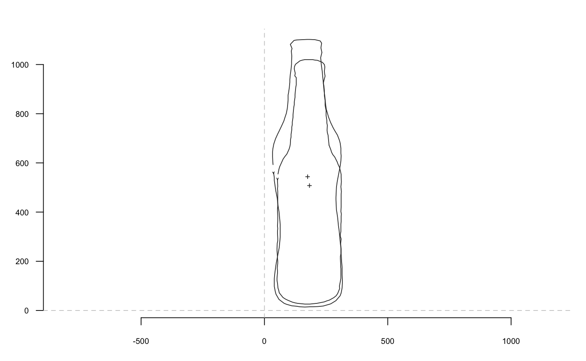
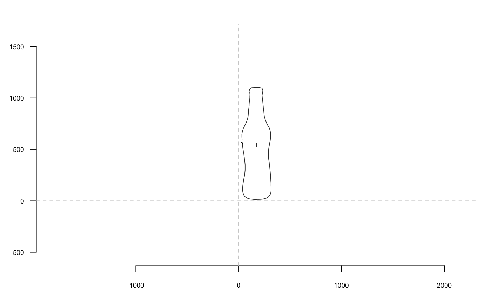
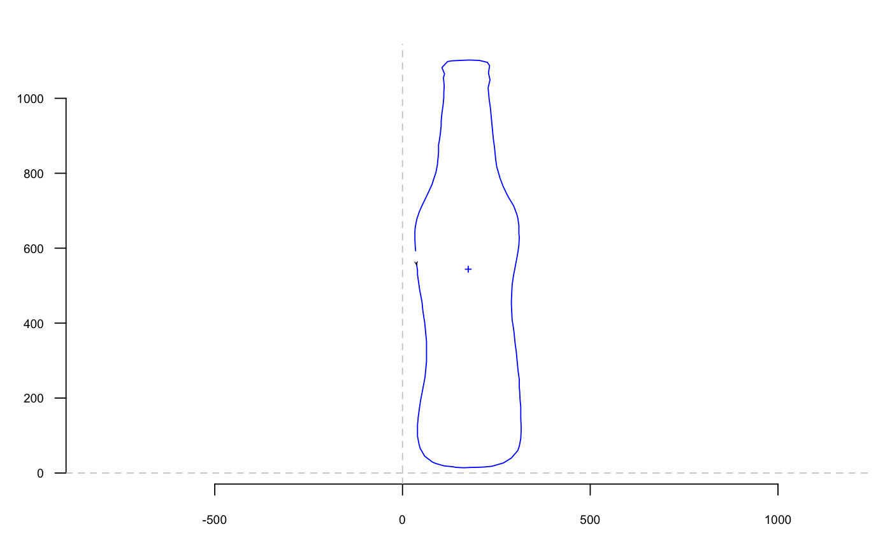
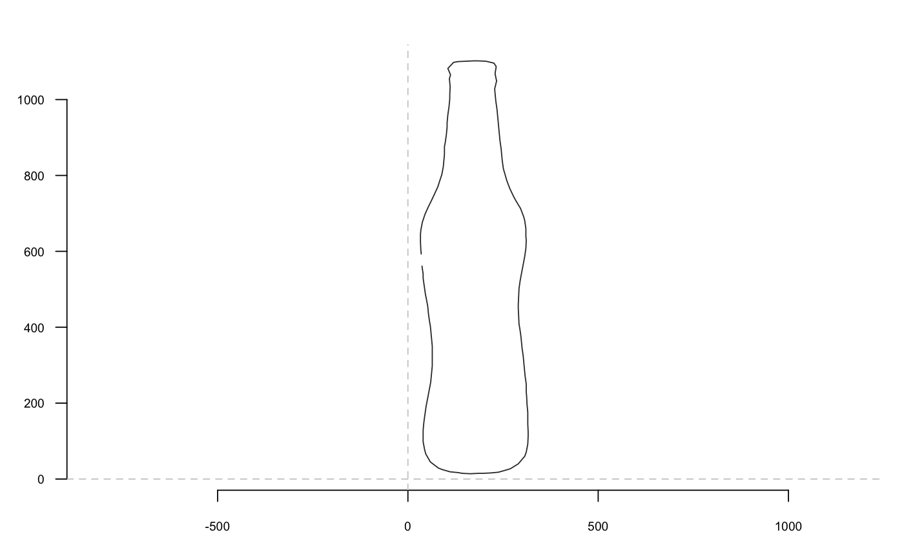
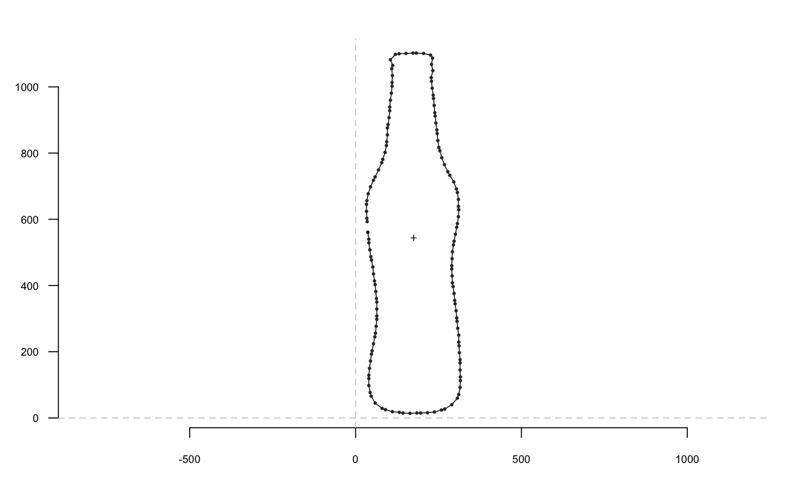
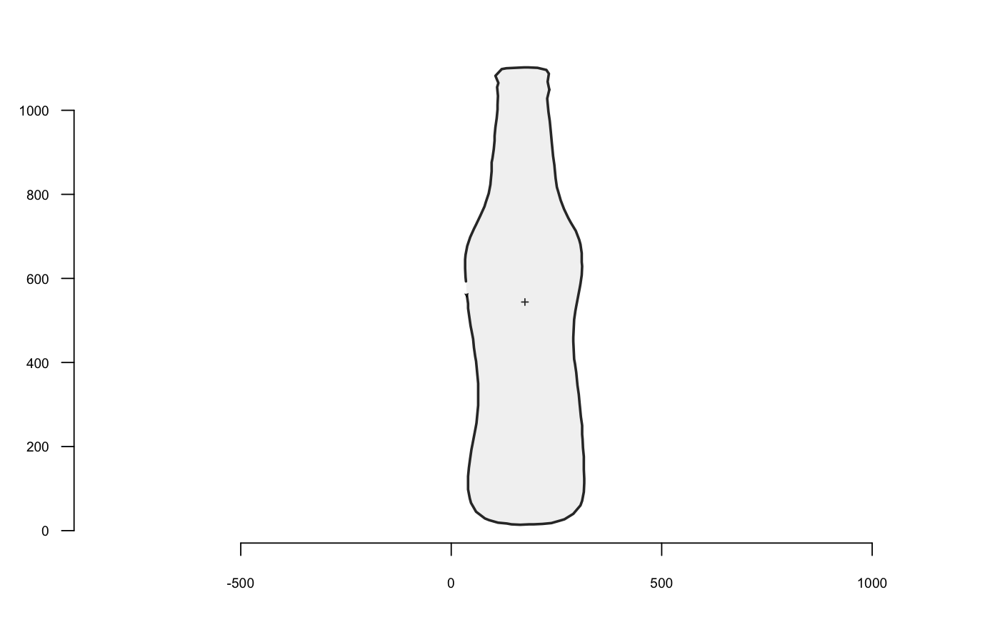

A simple wrapper around plot for plotting shapes. Widely used in Momocs in other graphical functions, in methods, etc.
coo_plot(coo, ...) # S3 method for default coo_plot(coo, xlim, ylim, border = "#333333", col = NA, lwd = 1, lty = 1, points = FALSE, first.point = TRUE, centroid = TRUE, xy.axis = TRUE, pch = 1, cex = 0.5, main = NA, poly = TRUE, plot.new = TRUE, plot = TRUE, zoom = 1, ...) ldk_plot(coo, ...)
| coo | A |
|---|---|
| ... | further arguments for use in coo_plot methods. See examples. |
| xlim | If |
| ylim | If |
| border | A color for the shape border. |
| col | A color to fill the shape polygon. |
| lwd | The |
| lty | The |
| points |
|
| first.point |
|
| centroid |
|
| xy.axis |
|
| pch | The |
| cex | The |
| main |
|
| poly | logical whether to use polygon and lines to draw the shape, or just points. In other words, whether the shape should be considered as a configuration of landmarks or not (eg a closed outline). |
| plot.new |
|
| plot | logical whether to plot something or just to create an empty plot. |
| zoom | a numeric to take your distances. |
No returned value.
Other plotting functions: coo_arrows,
coo_draw, coo_listpanel,
coo_lolli, coo_ruban,
ldk_chull, ldk_confell,
ldk_contour, ldk_labels,
ldk_links, plot_devsegments,
plot_table
b <- bot[1] coo_plot(b)coo_plot(bot[2], plot.new=FALSE) # equivalent to coo_draw(bot[2])coo_plot(b, zoom=2)coo_plot(b, border='blue')coo_plot(b, first.point=FALSE, centroid=FALSE)coo_plot(b, points=TRUE, pch=20)coo_plot(b, xy.axis=FALSE, lwd=2, col='#F2F2F2')